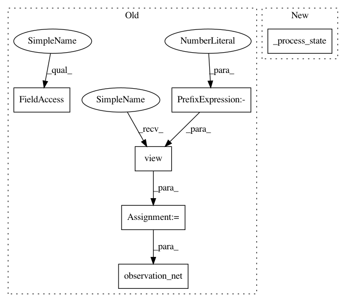

4bd09281f05185e5625112941b7ed11cf4e6cad5,catalyst/rl/agent/network.py,StateActionNet,_forward_ff,#StateActionNet#Any#Any#,116
Before Change
raise NotImplementedError
def _forward_ff(self, state, action):
state_ = state.view(state.shape[0], -1)
state_ = self.observation_net(state_)
action_ = action.view(action.shape[0], -1)
action_ = self.action_net(action_)
After Change
raise NotImplementedError()
def _forward_ff(self, state, action):
state_ = self._process_state(state, self.observation_net)
action_ = self.action_net(action)
x = torch.cat((state_, action_), dim=1)
x = self.main_net(x)
return x
In pattern: SUPERPATTERN
Frequency: 3
Non-data size: 6
Instances
Project Name: catalyst-team/catalyst
Commit Name: 4bd09281f05185e5625112941b7ed11cf4e6cad5
Time: 2019-09-05
Author: scitator@gmail.com
File Name: catalyst/rl/agent/network.py
Class Name: StateActionNet
Method Name: _forward_ff
Project Name: catalyst-team/catalyst
Commit Name: 4bd09281f05185e5625112941b7ed11cf4e6cad5
Time: 2019-09-05
Author: scitator@gmail.com
File Name: catalyst/rl/agent/network.py
Class Name: StateActionNet
Method Name: _forward_lama
Project Name: catalyst-team/catalyst
Commit Name: 4bd09281f05185e5625112941b7ed11cf4e6cad5
Time: 2019-09-05
Author: scitator@gmail.com
File Name: catalyst/rl/agent/network.py
Class Name: StateNet
Method Name: _forward_lama